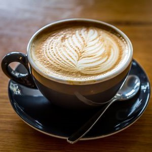
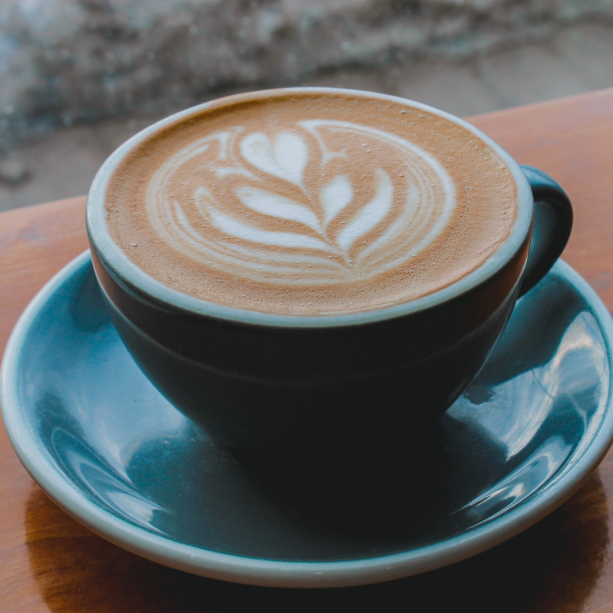

Americano
Caffè Americano atau Amerikano adalah minuman kopi yang dibuat dengan mencampurkan satu seloki espresso dengan air panas. Air panas yang digunakan dalam minuman ini adalah sebanyak 6 hingga 8 ons. Nama dari kopi ini pada awalnya merupakan ejekan bagi orang-orang Amerika yang meminta agar espresso mereka dibuat menjadi lebih encer.
Breve
Caffe Breve adalah minuman berbasis espresso yang dibuat seperti cappuccino, tetapi dengan dikukus setengah dan setengah bukannya susu.
Cappuccino
Cappuccino adalah minuman khas Italia yang dibuat dari espresso dan susu. tetapi referensi lain juga ada yang menyebutkan bahwa kapucino berawal dari biji biji kopi tentara Turki yang tertinggal setelah peperangan yang di pimpin oleh Kara Mustapha Pasha di Wina, Austria melawan tentara gabungan Polandia-Germania.
Flat White
Flat White adalah minuman kopi berbasis espresso yang terdiri dari dua gelas espresso yang kaya dan kuat dengan lapisan microfoam berbusa yang dihasilkan dari steamed milk.
Latte
Latte atau Caffè latte (Bahasa Italia yang artinya kopi susu) adalah espresso atau kopi yang dicampur dengan susu dan memiliki lapisan busa yang tipis di bagian atasnya. Perbandingan antara susu dengan kopi pada caffè latte adalah 2:1.
Espresso
Espreso adalah minuman yang dihasilkan dengan mengekstraksi biji kopi yang sudah digiling dengan menyemburkan air panas di bawah tekanan tinggi. Espresso berasal dari Bahasa Italia yang berarti express atau "cepat" karena dibuat untuk disajikan dengan segera kepada pelanggan.
Macchiato
Caffè macchiato adalah minuman kopi yang dibuat dengan mencampurkan espresso dengan susu. Macchiato dalam bahasa Italia memiliki arti "ditandai dengan bercak" dan dinamakan seperti itu karena espresso ditandai dengan sedikit busa yang berasal dari susu diatasnya.
Affogato
Affogato adalah sajian es krim dalam cangkir atau mangkuk kecil yang disiram dengan espresso. Sajian kopi unik ini berasal dari Italia. Dalam bahasa Italia affogato berarti tenggelam. Maksud dari penamaan itu adalah untuk menggambarkan tenggelamnya satu scoop es krim di dalam segelas espresso.
Moccacinno
Moccacinno merupakan minuman yang terdiri dari bahan berupa susu, kopi dan cokelat. Kopi yang digunakan biasanya jenis espresso yaitu kopi hitam. Kemudian dikombinasikan dengan cokelat bubuk, lalu diberikan whiped cream di atas minuman tersebut.